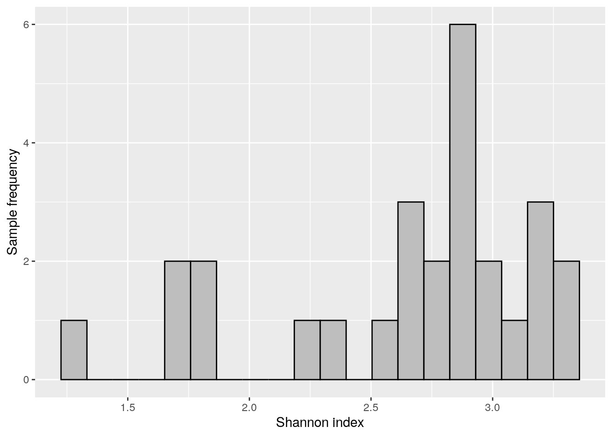
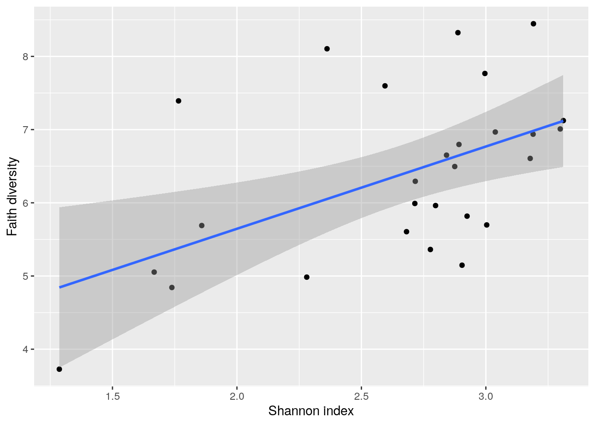
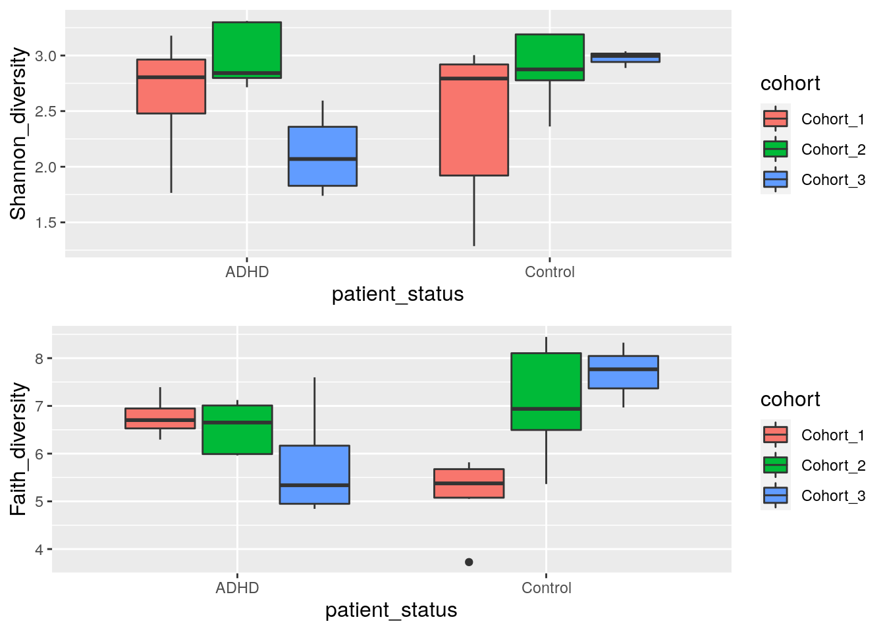

Chapter 7 Alpha diversity
This section demonstrates the analysis of alpha diversity. This quantity measures microbial diversity within each sample. Higher numbers of unique taxa, and more even abundance distributions within a sample yield larger values for alpha diversity.
Alpha diversity is a key quantity in a microbiome research. The mia package provides access to a wide variety of alpha diversity indices. For more background information and examples with various alpha diversity indices, see the online book.
Let us show how to calculate to different diversity indices, Shannon and Faith. Shannon index reflects how many different taxa there are and how evenly they are distributed within a sample. Faith index additionally takes into account the phylogenetic relations into account.
# Indices to be calculated.
# Every index is calculated by default if we don't specify indices.
indices <- c("shannon", "faith")
# Indices are stored in colData (i.e., sample metadata). We can specify the name
# of column, or we can use the default name which is the name of index
# (i.e., "shannon" and "faith").
names <- c("Shannon_diversity", "Faith_diversity")
# Calculates indices
tse <- estimateDiversity(tse, index = indices, name = names)
# Shows the calculated indices
knitr::kable(head(colData(tse)[names])) %>%
kableExtra::kable_styling("striped",
latex_options="scale_down") %>%
kableExtra::scroll_box(width = "100%")| Shannon_diversity | Faith_diversity | |
|---|---|---|
| A110 | 1.765407 | 7.39224 |
| A12 | 2.716438 | 6.29378 |
| A15 | 3.178103 | 6.60608 |
| A19 | 2.891987 | 6.79708 |
| A21 | 2.841979 | 6.65110 |
| A23 | 2.797942 | 5.96246 |
Next we can visualize Shannon index with histogram.
# ggplot needs data.frame format as input.
# Here, colData is DataFrame, therefore it needs to be converted to data.frame
shannon_hist <- ggplot(as.data.frame(colData(tse)),
aes(x = Shannon_diversity)) +
geom_histogram(bins = 20, fill = "gray", color = "black") +
labs(x = "Shannon index", y = "Sample frequency")
shannon_hist
Next, let us compare the indices based on a scatter-plot.
cross_plot <- ggplot2::ggplot(as.data.frame(colData(tse)),
aes(x = Shannon_diversity, y = Faith_diversity)) +
geom_point() + # Adds points
geom_smooth(method=lm) + # Adds regression line
labs(x = "Shannon index", y = "Faith diversity")
cross_plot## `geom_smooth()` using formula 'y ~ x'
7.1 Visualization
Next let us compare indices between different patient status and cohorts. Boxplot is suitable for that purpose.
# Creates Shannon boxplot
shannon_box <- ggplot(as.data.frame(colData(tse)),
aes(x = patient_status,
y = Shannon_diversity,
fill = cohort)) +
geom_boxplot() +
theme(title = element_text(size = 12)) # makes titles smaller
# Creates Faith boxplot
faith_box <- ggplot(as.data.frame(colData(tse)), aes(x = patient_status,
y = Faith_diversity,
fill = cohort)) +
geom_boxplot() +
theme(title = element_text(size = 12)) # makes titles smaller
# Puts them into same picture
gridExtra::grid.arrange(shannon_box, faith_box, nrow = 2)
For an alternative visualization, see examples with scater::plotColData.
7.2 Statistical testing and comparisons
To further investigate if patient status could explain the variation of Shannon index, let’s do a Wilcoxon test. This is a non-parametric test that doesn’t make specific assumptions about the distribution, unlike popular parametric tests, such as the t test, which assumes normally distributed observations.
Wilcoxon test can be used to estimate whether the differences between two groups is statistically significant. Here the ADHD and control groups are not significantly different between groups (p-value is over 0.05).
# Wilcoxon test, where Shannon index is the variable that we are comparing.
# Patient status - ADHD or control - is the factor that we use for grouping.
wilcoxon_shannon <- wilcox.test(Shannon_diversity ~ patient_status, data = colData(tse))
wilcoxon_shannon##
## Wilcoxon rank sum exact test
##
## data: Shannon_diversity by patient_status
## W = 76, p-value = 0.4879
## alternative hypothesis: true location shift is not equal to 0Another test that we can make is to test if ADHD samples differs between different cohorts. From boxplot that we made in previous step, we can see that there might be statistically significant difference between different cohorts.
Let’s compare Shannon index of ADHD samples between cohort 2 and cohort 3.
As we can see, there is statistically significant difference between the cohorts.
# Takes subset of colData. Takes only ADHD samples
ADHD_shannon <- colData(tse)[ colData(tse)[, "patient_status"] == "ADHD" , ]
# Takes subset of colData. Takes only samples that are in cohort 2 or cohort 3.
ADHD_shannon <- ADHD_shannon[ ADHD_shannon[, "cohort"] %in% c("Cohort_2", "Cohort_3") , ]
# Wilcoxon test, where Shannon index is the variable that we are comparing.
# Cohort - 2 or 3 - is the factor that we use for grouping.
wilcoxon_shannon_ADHD_cohorts <- wilcox.test(Shannon_diversity ~ cohort, data = ADHD_shannon)
wilcoxon_shannon_ADHD_cohorts##
## Wilcoxon rank sum exact test
##
## data: Shannon_diversity by cohort
## W = 20, p-value = 0.01587
## alternative hypothesis: true location shift is not equal to 0For more examples, see a dedicated section on alpha diversity in the online book.
7.3 Exercises
Add the following in the reproducible summary report.
Estimate alpha diversity for each sample and draw a histogram. Tip: estimateDiversity
Compare the results between two or more alpha diversity indices (visually and/or statistically).
See online book for further examples.
Example Solutions
## Loading required package: SummarizedExperiment## Loading required package: MatrixGenerics## Loading required package: matrixStats##
## Attaching package: 'MatrixGenerics'## The following objects are masked from 'package:matrixStats':
##
## colAlls, colAnyNAs, colAnys, colAvgsPerRowSet, colCollapse,
## colCounts, colCummaxs, colCummins, colCumprods, colCumsums,
## colDiffs, colIQRDiffs, colIQRs, colLogSumExps, colMadDiffs,
## colMads, colMaxs, colMeans2, colMedians, colMins, colOrderStats,
## colProds, colQuantiles, colRanges, colRanks, colSdDiffs, colSds,
## colSums2, colTabulates, colVarDiffs, colVars, colWeightedMads,
## colWeightedMeans, colWeightedMedians, colWeightedSds,
## colWeightedVars, rowAlls, rowAnyNAs, rowAnys, rowAvgsPerColSet,
## rowCollapse, rowCounts, rowCummaxs, rowCummins, rowCumprods,
## rowCumsums, rowDiffs, rowIQRDiffs, rowIQRs, rowLogSumExps,
## rowMadDiffs, rowMads, rowMaxs, rowMeans2, rowMedians, rowMins,
## rowOrderStats, rowProds, rowQuantiles, rowRanges, rowRanks,
## rowSdDiffs, rowSds, rowSums2, rowTabulates, rowVarDiffs, rowVars,
## rowWeightedMads, rowWeightedMeans, rowWeightedMedians,
## rowWeightedSds, rowWeightedVars## Loading required package: GenomicRanges## Loading required package: stats4## Loading required package: BiocGenerics##
## Attaching package: 'BiocGenerics'## The following objects are masked from 'package:stats':
##
## IQR, mad, sd, var, xtabs## The following objects are masked from 'package:base':
##
## anyDuplicated, append, as.data.frame, basename, cbind, colnames,
## dirname, do.call, duplicated, eval, evalq, Filter, Find, get, grep,
## grepl, intersect, is.unsorted, lapply, Map, mapply, match, mget,
## order, paste, pmax, pmax.int, pmin, pmin.int, Position, rank,
## rbind, Reduce, rownames, sapply, setdiff, sort, table, tapply,
## union, unique, unsplit, which.max, which.min## Loading required package: S4Vectors##
## Attaching package: 'S4Vectors'## The following objects are masked from 'package:base':
##
## expand.grid, I, unname## Loading required package: IRanges## Loading required package: GenomeInfoDb## Loading required package: Biobase## Welcome to Bioconductor
##
## Vignettes contain introductory material; view with
## 'browseVignettes()'. To cite Bioconductor, see
## 'citation("Biobase")', and for packages 'citation("pkgname")'.##
## Attaching package: 'Biobase'## The following object is masked from 'package:MatrixGenerics':
##
## rowMedians## The following objects are masked from 'package:matrixStats':
##
## anyMissing, rowMedians## Loading required package: SingleCellExperiment## Loading required package: TreeSummarizedExperiment## Loading required package: Biostrings## Loading required package: XVector##
## Attaching package: 'Biostrings'## The following object is masked from 'package:base':
##
## strsplit## Loading required package: ggplot2## Loading required package: ggraph